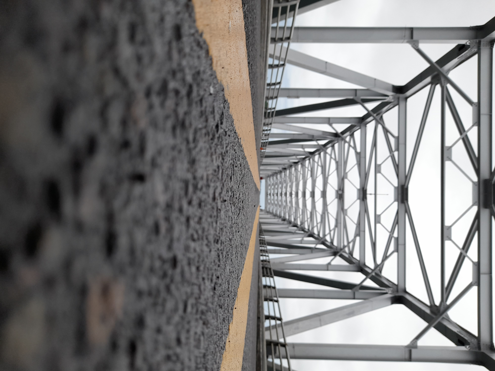
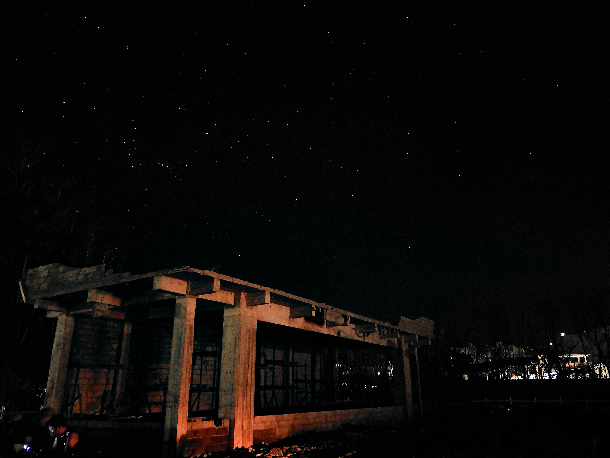
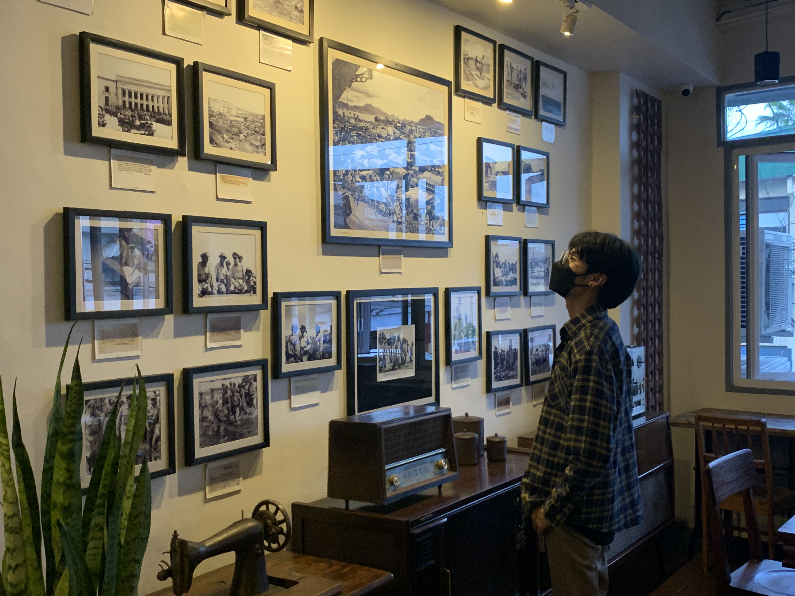
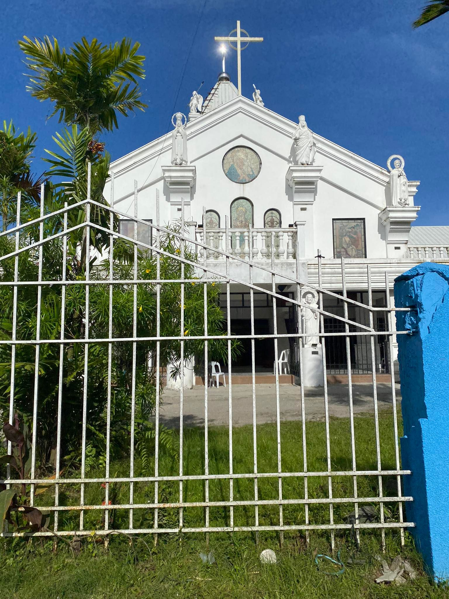

When the sky is finally open the rain and wind stop blowin
Jhudiel Abarracoso

This is an image of the San Juanico bridge, a bridge built in the 1972 under the reign of Ferdinand Marcos. This is the longest bridge in the Philippines*, this bridge is also known as the ‘Bridge of Love’ because, Marcos dedicated the bridge to his wife Imelda. This picture shows the modernization of the Philippines.
* The editor would like to clarify that the longest bridge in the Philippines as of June 2022 is the Cebu-Cordova Bridge (CCLEX).
Gabriel Alcover
Another example of a Spanish influence is the fiestas that we experience. These events are deeply engrained to our Filipino culture. Each city or province has their own local fiesta. It is a time to be marry and enjoy the local festivities. These occasions are connected to an important figure like a saint, or an significant happening in Filipino history like the ‘higantes’ festival.
Alexandra Dela Cruz
Duke Dy
Dark city skylines.
Christien Enverzo
Tristan Hermo
Norbert Mate
David Palomo
The Future in our Stars
Sean Siega

The long-lasting blackout caused by Typhoon Odette removed enough light pollution making it possible to capture the stars in Liloan, Southern Leyte.
Philip Suson

The image of a boy looking at old framed pictures shows how rich Philippines history each. As the boy gazes upon the framed photos on the wall, it is hard not to imagine what happened In those historical moments. This picture captures the rich history of the Philippines encapsulated in a single picture. It also shows how modern day Filipinos are intrigued and are admiring the historical background of our country.
Aaron Torrefiel

Ethann Villasin
A significant contribution from the Americans is the game of basketball. The Filipino’s love for basketball demonstrates just how much foreign influence affects the day to day life of us Filipinos. Basketball is a game invented by an American, James Naismith, the game’s rules and it’s different equipment have been altered drastically since its conception. In the Philippines, it is very easy to spot a basketball court or even just a basketball ring across a street, always filled with children eager to play the sport.